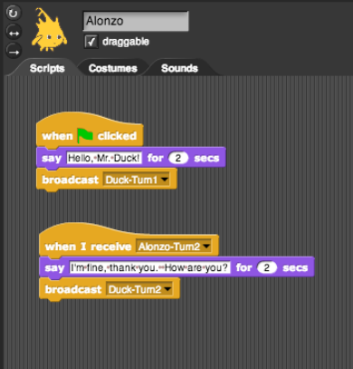
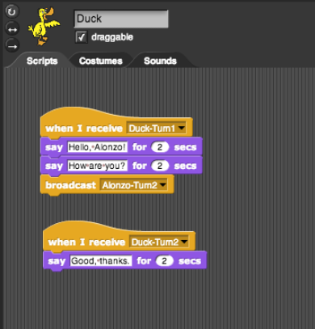
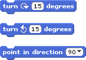
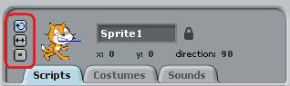

Scripts
The play sound blocks in the short script examples from the last page played in order: one block and then the next until there are no more blocks to run. But we did see that what we actually heard depended on whether we waited until one sound was done playing before starting the next or not. (So what use is the non-until done version of the play sound block? If different sprites play different sounds at once, you can hear them both overlapping.)
The broadcast block allows us to control which block is run next. Try to make these scripts in Snap!. You will find that Alonzo and the Duck have completely separate script areas. Click on each character in the sprite corral to see its script area. Once you are done, press the green flag to start the short play.

A note about style: You will notice that we chose to name the messages that were broadcast so that it would help us keep track of what we were doing and what messages we were sending. We recommend that you do this in your projects!
Hint
Try to figure out what the commands whose images are on the left and the buttons whose images are on the right do. These will be helpful to get the characters to face each other.
